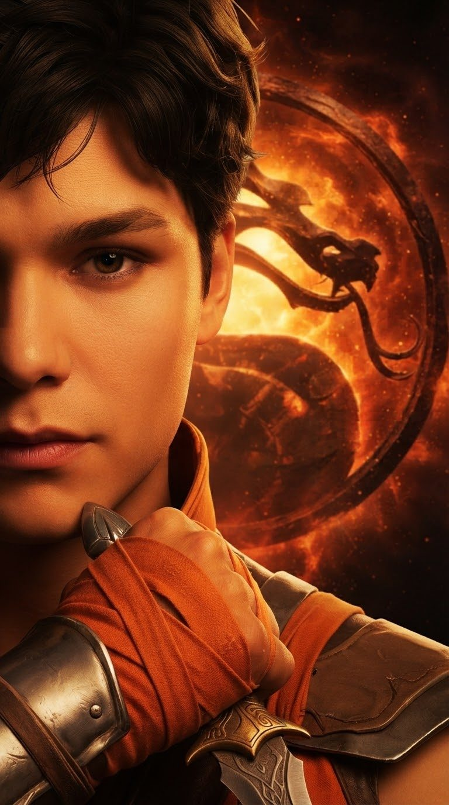
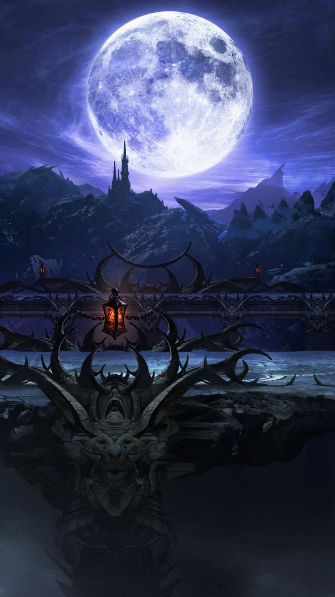

🎲 Os dados
Tudo se decide com dois tipos de dado:
- D20 (vai de 1 a 20): usado para iniciativa, ataque e defesa.
- D6 (vai de 1 a 6): usado para o dano, só depois que o golpe acerta.
Os atributos do lutador somam ou subtraem do resultado do dado.
Monte seu lutador em 10 etapas. Ele nasce no nível 1 e evolui lutando até o 6.
Toque num lutador para abrir a ficha completa.
Cada lutador tem 6 níveis e a própria XP. Toque num lutador para ver o que ele ganha em cada nível e trocar habilidades e defesas.
Tudo se decide com dois tipos de dado:
Os atributos do lutador somam ou subtraem do resultado do dado.
No começo de cada round, os dois rolam D20 + Agilidade. Quem tirar mais ataca primeiro. Empate: rolam de novo.
Depois disso, os dois se revezam: um ataca, o outro defende, e trocam.
| Golpe | Acerto | Dano | Para que serve |
|---|---|---|---|
| 👊 Golpe rápido | +3 + ½ Agilidade | 1d4 + Força | Acerta fácil, mas tira pouco. |
| 💥 Golpe forte | −2 + Força | 2d4 + Força (Agilidade se lançar a arma) | Mais difícil de acertar, mas dói bem mais. |
| ✊ Agarrão | sem dado | 1d6 + Força | Passa direto pelo bloqueio. Se o outro esquivar, erra e você fica aberto. |
| ⚡ Especial | +2 + Mente | 2d6 + atributo do tipo | O golpe especial do personagem. Gasta 50 da barra roxa. |
| ✦ Habilidades | próprio + ½ atributo | o da habilidade + atributo do tipo | Aparecem depois dos golpes, se estiverem equipadas. Têm limite de usos por luta. |
Quem defende escolhe antes de ver o golpe:
Com defesas equipadas (até 4), aparecem outras opções:
Ataque = D20 + bônus do golpe (que já inclui o atributo).
Defesa = D20 + bônus da defesa.
Se o ataque for maior ou igual à defesa, acertou. No empate, quem ataca ganha.
Acertou? Rola o dano e soma o atributo do tipo de ataque:
Habilidades também podem somar. Todo acerto tira pelo menos 1 de vida, e o sangue vai ficando no lutador.
A vida é 27 + Vitalidade. Chegou a zero, perdeu o round.
A barra roxa embaixo da vida vai de 0 a 100. Ela enche quando você:
Com 50 ou mais, o botão de Especial fica liberado.
Cada lutador tem quatro atributos, de 0 a 5 (6 com o bônus do nível 3). Os lutadores criados começam com 1 em cada e ganham 4 pontos extras para distribuir. No dano, soma o atributo do tipo de ataque. A vida é 27 + Vitalidade.
| Atributo | O que faz na luta |
|---|---|
| 💪 Força | Soma no dano de murro, chute, agarrão e golpe corpo a corpo. +1 no acerto do golpe forte por ponto. |
| 💨 Agilidade | Soma no dano de arma lançada e tiro. +1 na iniciativa e na esquiva por ponto. +1 no bloqueio e no acerto do golpe rápido a cada 2. |
| 🔮 Mente | Soma no dano de magia e energia. +1 no acerto do especial por ponto. Cada acerto enche +2 de barra por ponto. |
| ❤️ Vitalidade | Vida = 27 + Vitalidade. Curas recuperam +1 a cada 2. Com 3 ou mais, efeitos de estado duram 1 troca a menos. |
| Efeito | O que faz | Duração |
|---|---|---|
| 🩸 Sangramento | 1 de dano no fim de cada troca. | 3 trocas |
| 🔥 Queimadura | 2 de dano no fim de cada troca. | 2 trocas |
| ❄️ Congelamento | Perde a próxima ação. Se precisar defender, defende com −4 e não esquiva. | 1 ação |
| 🐌 Lentidão | −2 no acerto, no bloqueio e na esquiva. | 2 trocas |
| 💫 Atordoamento | Perde a próxima ação. Se precisar defender, só bloqueia, com −2. | 1 ação |
Não acumulam: aplicar de novo só renova a duração. Depois de congelar ou atordoar, o lutador fica 2 trocas imune a perder a vez. Tudo some no fim do round.
Cada lutador tem a própria XP e vai do nível 1 ao 6: 150, 400, 750, 1.200 e 1.800 XP acumulados.
Fora do Ringue (dias sem luta, ganhos menores que uma vitória em luta): Expedição de 30 min dá 50 moedas e 8 XP, de 2 h dá 150 moedas e 20 XP, de 8 h dá 400 moedas e 45 XP (+25% de moedas no reino natal). Test Your Might dá de 3 a 18 moedas e de 2 a 8 XP, conforme o material mais difícil quebrado (madeira, pedra, aço, rubi, diamante), +4 moedas se superar o rival. Mestre da Fatality dá 6 moedas na vitória, +1 por símbolo acima de 5 na última sequência (máximo 12), e 5 XP; na derrota, 1 moeda e 2 XP. Com trapaça ligada, nada é ganho.
Veja e troque os espaços em Criar Kombatente › Evolução. Na máquina, o oponente usa o mesmo nível do seu lutador (na Torre, sobe a cada andar). No online, todo mundo luta no nível 1.
Na tela de escolha, toque em Dupla para levar 2 lutadores: o principal, que começa a luta, e a reserva.
A luta é melhor de 3: quem vencer 2 rounds ganha. Vencer um round sem levar nenhum dano é uma Flawless Victory.
Quem ganha a luta tem 5 segundos para escolher a finalização:
Se o tempo acabar, a luta termina sem finalização.
Fã-site sem ligação com a NetherRealm ou a Warner Bros. Mortal Kombat e seus personagens pertencem aos donos. Rudolf e os kombatentes criados aqui são criações de fã. Site não oficial criado por Rudolf Martins.
Passe o celular. Quem não está jogando, não olhe a tela!


Trapaça ativada: você não ganha moedas enquanto ela estiver ligada.
Guarde as suas moedas. Em breve elas vão servir para alguma coisa…
A música parou. Pode fechar esta aba quando quiser. Até a próxima luta.